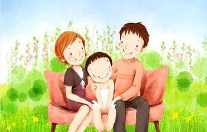

你是哪种依恋方式
13708 人测试过
2014-07-26 发布

开始测试
在生命早期建立的关系会影响到我们在成年时所建立的关系。不过并不是说如果你和你父母关系不佳，你就会注定在每个你遇到的人身上重复这种模式。并且人是可以“改变”的，也的确会改变（一些研究者在最初实验的几个月或几年后再次评定了他们当初实验参与者的依恋类型，发现25%—30%的人改变了依恋方式）另外，在亲密关系中的体验可以帮助我们学习“新的和更健康的”与人交往的方式，这些方式是可以和我们在幼年时期所学到的大相径庭的。
事实上，人们还可以因为自己的体验而发展出不止一种依恋方式。依恋方式是个体对人际关系的预期方式。
猜你喜欢：